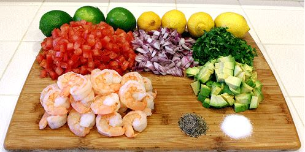
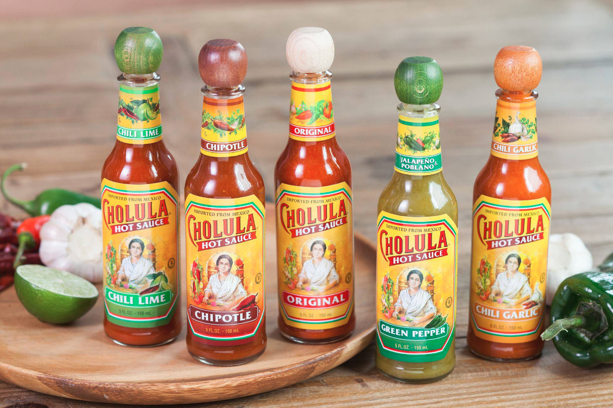

Ingredients
- Peeled Shrimp
- Cilantro
- Lime
- Chile Serrano
- Black Pepper and Salt

- Avocado
- Tomato
- Cucumber
- Purple Onion
Preparing
- Clean the Vegetables
- Cut the vegetables and set aside
- Marinate the shrimp with lime, Chile Serrano, Pepper & Salt and Cucumber
Marinating times make a difference when you are making ceviche. You will need at least 60 minutes for the citrus to “cook” the shrimp.
Step 2

- Once your shrimp turned pink, added the rest of the ingredients
- Mix all ingredients
- Cut avocado is small cubes
- bla bla bla
Enjoy your Ceviche!
>
